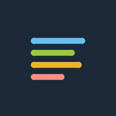
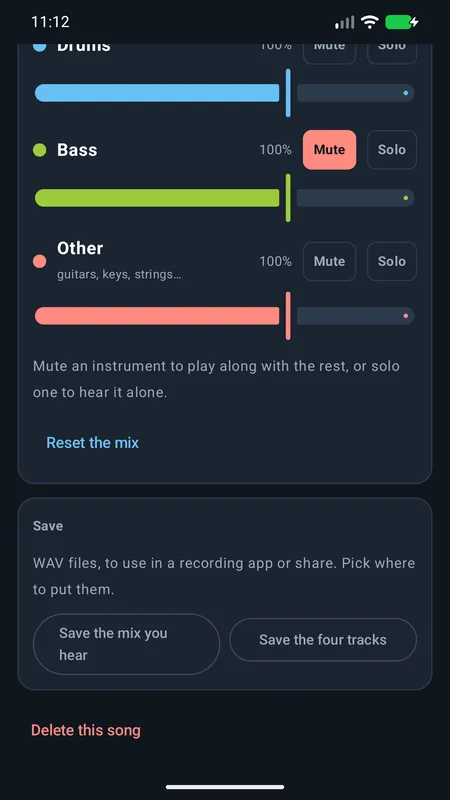
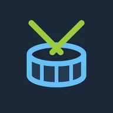

1 · Pick
An audio file
MP3, M4A, FLAC, WAV and more, from your files or shared from another app. A song can take a few minutes, and the work goes on in the background.
Pick an audio file and TrackSlate separates the vocals, drums, bass and everything else with a neural network that runs on your phone: no upload, no account. Then mute an instrument to play its part yourself, or solo one to learn it. Available in English and Portuguese.




MP3, M4A, FLAC, WAV and more, from your files or shared from another app. A song can take a few minutes, and the work goes on in the background.
Vocals, drums, bass and other (guitars, keys, strings…), made on your phone. It is not perfect: a little of one instrument can stay in another.
Turn an instrument down or off to play its part yourself, or solo it to learn it. Save the mix you hear or the four tracks as WAV files.
TrackSlate does not require an account, and your songs never leave your phone. Use it only with music you own or have permission to use, such as your own recordings or licensed tracks, and don't share tracks separated from music you don't have rights to. Separation uses the HT Demucs model by Alexandre Défossez and Meta AI Research (code under the MIT licence), run by ONNX Runtime (MIT). TrackSlate is independent and not affiliated with them or with any artist; it does not provide or download any music.
Support: gameslate@proton.me
Find your next great game.
Discover PC games with player activity, reviews and Linux compatibility context, all in one place.
Read 15. Get 3 great ones.
Tell it up to 15 books you've read and get 3 suggestions for what to read next. English and Portuguese.
Tune it. Set it up. Play.
A guitar tuner and step-by-step setup guides for acoustic and electric guitar, with an intonation helper. English and Portuguese.

A live band in your pocket.
A backing band that plays blues, pop, rock, waltz and jazz in the key and tempo you choose, with chord charts, scales and chord shapes. English and Portuguese.
Write it. Play it. Record it.
A songwriter's notebook with a band: type chords and words, hear them played, record your voice or guitar on top, and share the result. English and Portuguese.